Ortholog Divergence Report
Input: LAPTM5.valid.longest.fa · N sequences: 408 · Aligned length: 892 codons
Reference: Bos_indicus
Quick risk overview
- LOW: 0
- INTERMEDIATE: 0
- HIGH: 83028


Composition & complexity per sequence
Saved as per_sequence_composition.csv. High low-complexity or repeat content can reduce BLAST sensitivity due to soft masking.
| id | GC | GC skew | CpG dens. | AA LCR frac | NT repeat frac | AA len | CDS len |
|---|---|---|---|---|---|---|---|
| Bos_indicus | 0.56187 | -0.1236 | 0.03413 | 0.0947 | 0.75126 | 264 | 792 |
| Balaenoptera_acutorostrata | 0.55556 | -0.14545 | 0.03161 | 0.0 | 0.77525 | 264 | 792 |
| Molothrus_aeneus | 0.57106 | -0.12217 | 0.01682 | 0.0 | 0.75711 | 258 | 774 |
| Macaca_mulatta | 0.55471 | -0.18349 | 0.03567 | 0.0458 | 0.73282 | 262 | 786 |
| Coturnix_japonica | 0.50391 | -0.12661 | 0.01173 | 0.0 | 0.72786 | 256 | 768 |
| Passer_montanus | 0.57106 | -0.13122 | 0.02199 | 0.0 | 0.73902 | 258 | 774 |
| Meriones_unguiculatus | 0.54406 | -0.13615 | 0.02813 | 0.04981 | 0.78799 | 261 | 783 |
| Onychostruthus_taczanowskii | 0.5646 | -0.1167 | 0.01811 | 0.0 | 0.73127 | 258 | 774 |
| Chelonia_mydas | 0.48366 | -0.0973 | 0.02356 | 0.04706 | 0.76209 | 255 | 765 |
| Odobenus_rosmarus_divergens | 0.55767 | -0.14091 | 0.02919 | 0.0 | 0.74905 | 263 | 789 |
| Jaculus_jaculus | 0.56107 | -0.12472 | 0.03185 | 0.12977 | 0.71374 | 262 | 786 |
| Pipistrellus_kuhlii | 0.58238 | -0.15789 | 0.03964 | 0.0 | 0.76756 | 261 | 783 |
| Carlito_syrichta | 0.57471 | -0.15111 | 0.02813 | 0.0 | 0.73052 | 261 | 783 |
| Artibeus_jamaicensis | 0.55939 | -0.12329 | 0.02941 | 0.04598 | 0.77267 | 261 | 783 |
| Elephas_maximus_indicus | 0.55598 | -0.17162 | 0.0242 | 0.04962 | 0.80025 | 262 | 786 |
| Cygnus_olor | 0.48708 | -0.11936 | 0.0194 | 0.05039 | 0.70155 | 258 | 774 |
| Tachyglossus_aculeatus | 0.61174 | -0.06531 | 0.0425 | 0.14607 | 0.72909 | 267 | 801 |
| Cebus_imitator | 0.57634 | -0.17439 | 0.03822 | 0.0458 | 0.76336 | 262 | 786 |
| Manis_javanica | 0.56147 | -0.14673 | 0.02919 | 0.0 | 0.76426 | 263 | 789 |
| Falco_rusticolus | 0.49354 | -0.12565 | 0.01423 | 0.05039 | 0.7261 | 258 | 774 |
| Emydura_macquarii_macquarii | 0.47354 | -0.13966 | 0.01589 | 0.0 | 0.74471 | 252 | 756 |
| Molothrus_ater | 0.57106 | -0.12217 | 0.01682 | 0.0 | 0.75711 | 258 | 774 |
| Leptonychotes_weddellii | 0.56781 | -0.16518 | 0.03173 | 0.05703 | 0.7744 | 263 | 789 |
| Kogia_breviceps | 0.55556 | -0.14545 | 0.03161 | 0.0 | 0.7904 | 264 | 792 |
| Melospiza_georgiana | 0.56848 | -0.10455 | 0.01811 | 0.0 | 0.76357 | 258 | 774 |
| Trachypithecus_francoisi | 0.5598 | -0.19091 | 0.03567 | 0.0458 | 0.74555 | 262 | 786 |
| Monodon_monoceros | 0.55556 | -0.14545 | 0.03413 | 0.04545 | 0.77525 | 264 | 792 |
| Phocoena_phocoena | 0.55385 | -0.13426 | 0.03338 | 0.0 | 0.76026 | 260 | 780 |
| Lontra_canadensis | 0.56401 | -0.1191 | 0.03046 | 0.04563 | 0.7744 | 263 | 789 |
| Gorilla_gorilla_gorilla | 0.5322 | -0.15074 | 0.02376 | 0.08136 | 0.73333 | 295 | 885 |
| Corvus_moneduloides | 0.58656 | -0.14537 | 0.02587 | 0.04651 | 0.73385 | 258 | 774 |
| Pogoniulus_pusillus | 0.49354 | -0.15707 | 0.00388 | 0.06202 | 0.74419 | 258 | 774 |
| Delphinapterus_leucas | 0.55682 | -0.14739 | 0.03287 | 0.0 | 0.77525 | 264 | 792 |
| Phodopus_roborovskii | 0.54198 | -0.15023 | 0.03057 | 0.0 | 0.78499 | 262 | 786 |
| Lagenorhynchus_obliquidens | 0.56566 | -0.14286 | 0.03413 | 0.0 | 0.78157 | 264 | 792 |
| Lynx_rufus | 0.57161 | -0.15743 | 0.03553 | 0.0 | 0.76046 | 263 | 789 |
| Harpia_harpyja | 0.47804 | -0.11892 | 0.00647 | 0.0 | 0.76357 | 258 | 774 |
| Vulpes_lagopus | 0.56654 | -0.15436 | 0.02665 | 0.04563 | 0.77567 | 263 | 789 |
| Cygnus_atratus | 0.48708 | -0.11936 | 0.0207 | 0.05039 | 0.70284 | 258 | 774 |
| Chrysemys_picta_bellii | 0.48235 | -0.11653 | 0.02094 | 0.04706 | 0.75817 | 255 | 765 |
| Lutra_lutra | 0.5602 | -0.1086 | 0.03173 | 0.04563 | 0.7744 | 263 | 789 |
| Ceratotherium_simum_simum | 0.56448 | -0.12931 | 0.03045 | 0.05839 | 0.73844 | 274 | 822 |
| Chinchilla_lanigera | 0.59288 | -0.17597 | 0.04204 | 0.11832 | 0.79771 | 262 | 786 |
| Pteropus_vampyrus | 0.54404 | -0.09841 | 0.02768 | 0.0 | 0.77547 | 193 | 579 |
| Lonchura_striata | 0.56848 | -0.11364 | 0.02199 | 0.0 | 0.76615 | 258 | 774 |
| Rhinopithecus_bieti | 0.55725 | -0.19178 | 0.03567 | 0.0458 | 0.73028 | 262 | 786 |
| Terrapene_triunguis | 0.49281 | -0.11406 | 0.02487 | 0.04706 | 0.77255 | 255 | 765 |
| Gavia_stellata | 0.49354 | -0.08901 | 0.0194 | 0.0 | 0.72222 | 258 | 774 |
| Equus_quagga | 0.58365 | -0.15536 | 0.03964 | 0.0 | 0.75479 | 261 | 783 |
| Sylvia_atricapilla | 0.54391 | -0.01651 | 0.01399 | 0.07784 | 0.73353 | 334 | 1002 |
| Canis_lupus_familiaris | 0.56781 | -0.14732 | 0.03046 | 0.04563 | 0.77313 | 263 | 789 |
| Molossus_molossus | 0.56782 | -0.15789 | 0.02992 | 0.08276 | 0.73793 | 290 | 870 |
| Ammospiza_nelsoni | 0.54368 | -0.03171 | 0.01496 | 0.0 | 0.69885 | 290 | 870 |
| Buceros_rhinoceros_silvestris | 0.50973 | -0.09415 | 0.02597 | 0.0 | 0.76654 | 257 | 771 |
| Sapajus_apella | 0.58142 | -0.17287 | 0.03694 | 0.0458 | 0.75064 | 262 | 786 |
| Mesocricetus_auratus | 0.53562 | -0.14014 | 0.02803 | 0.0 | 0.78244 | 262 | 786 |
| Theropithecus_gelada | 0.55598 | -0.18078 | 0.03694 | 0.0458 | 0.74555 | 262 | 786 |
| Lemur_catta | 0.57506 | -0.18584 | 0.03312 | 0.0 | 0.78244 | 262 | 786 |
| Pteropus_alecto | 0.5526 | -0.16514 | 0.02792 | 0.0 | 0.76679 | 263 | 789 |
| Neophocaena_asiaeorientalis_asiaeorientalis | 0.55682 | -0.14286 | 0.03287 | 0.0 | 0.77904 | 264 | 792 |
| Pongo_pygmaeus | 0.56616 | -0.17753 | 0.03567 | 0.0458 | 0.73537 | 262 | 786 |
| Lathamus_discolor | 0.4845 | -0.088 | 0.01294 | 0.05039 | 0.74419 | 258 | 774 |
| Eulemur_rufifrons | 0.5827 | -0.19214 | 0.03694 | 0.0 | 0.77481 | 262 | 786 |
| Columba_livia | 0.52196 | -0.11386 | 0.02975 | 0.0 | 0.7261 | 258 | 774 |
| Colius_striatus | 0.49096 | -0.11579 | 0.00647 | 0.05039 | 0.74806 | 258 | 774 |
| Elephantulus_edwardii | 0.54453 | -0.15888 | 0.02293 | 0.07634 | 0.74427 | 262 | 786 |
| Bison_bison_bison | 0.56439 | -0.12304 | 0.03413 | 0.04924 | 0.76894 | 264 | 792 |
| Caretta_caretta | 0.47974 | -0.09537 | 0.02225 | 0.0 | 0.79085 | 255 | 765 |
| Calidris_pugnax | 0.49871 | -0.11399 | 0.01552 | 0.05039 | 0.73902 | 258 | 774 |
| Anas_platyrhynchos | 0.49009 | -0.09926 | 0.01713 | 0.1 | 0.75946 | 370 | 1110 |
| Fulmarus_glacialis | 0.48837 | -0.08466 | 0.01423 | 0.0 | 0.72093 | 258 | 774 |
| Vidua_chalybeata | 0.57752 | -0.10962 | 0.02587 | 0.0 | 0.76615 | 258 | 774 |
| Pteronotus_mesoamericanus | 0.54406 | -0.13615 | 0.02941 | 0.0 | 0.79183 | 261 | 783 |
| Oryctolagus_cuniculus | 0.60178 | -0.15433 | 0.04459 | 0.04962 | 0.78499 | 262 | 786 |
| Physeter_macrocephalus | 0.55303 | -0.14155 | 0.02781 | 0.0 | 0.78662 | 264 | 792 |
| Rhinatrema_bivittatum | 0.50575 | -0.18182 | 0.03453 | 0.09962 | 0.74202 | 261 | 783 |
| Pyrgilauda_ruficollis | 0.57364 | -0.12613 | 0.02329 | 0.0 | 0.74419 | 258 | 774 |
| Neopsephotus_bourkii | 0.4832 | -0.10695 | 0.00906 | 0.05039 | 0.73385 | 258 | 774 |
| Muntiacus_reevesi | 0.55429 | -0.11617 | 0.03666 | 0.04924 | 0.76768 | 264 | 792 |
| Corapipo_altera | 0.53876 | -0.15588 | 0.01294 | 0.0 | 0.75969 | 258 | 774 |
| Fukomys_damarensis | 0.58524 | -0.16087 | 0.03185 | 0.0 | 0.75445 | 262 | 786 |
| Aotus_nancymaae | 0.57761 | -0.18062 | 0.03567 | 0.12214 | 0.74809 | 262 | 786 |
| Apteryx_mantelli | 0.4845 | -0.12 | 0.02199 | 0.0 | 0.75323 | 258 | 774 |
| Ficedula_albicollis | 0.56885 | -0.13575 | 0.01546 | 0.09653 | 0.75933 | 259 | 777 |
| Pteropus_giganteus | 0.55198 | -0.13398 | 0.01717 | 0.10611 | 0.72669 | 311 | 933 |
| Eptesicus_fuscus | 0.56705 | -0.16216 | 0.03453 | 0.0 | 0.77778 | 261 | 783 |
| Heterocephalus_glaber | 0.58015 | -0.17982 | 0.03185 | 0.0 | 0.73664 | 262 | 786 |
| Myotis_brandtii | 0.5903 | -0.08741 | 0.03926 | 0.0 | 0.74923 | 323 | 969 |
| Anser_cygnoides | 0.48579 | -0.11702 | 0.01682 | 0.05039 | 0.72222 | 258 | 774 |
| Camelus_ferus | 0.56439 | -0.15436 | 0.03919 | 0.0 | 0.76641 | 264 | 792 |
| Peromyscus_maniculatus_bairdii | 0.5598 | -0.13636 | 0.03312 | 0.0 | 0.79008 | 262 | 786 |
| Myotis_myotis | 0.58691 | -0.09408 | 0.03889 | 0.0 | 0.74949 | 326 | 978 |
| Panthera_uncia | 0.57288 | -0.16372 | 0.03173 | 0.0 | 0.75158 | 263 | 789 |
| Cervus_elaphus | 0.56187 | -0.1236 | 0.0354 | 0.04924 | 0.73737 | 264 | 792 |
| Mustela_erminea | 0.56147 | -0.13318 | 0.03173 | 0.04563 | 0.77693 | 263 | 789 |
| Lipotes_vexillifer | 0.55808 | -0.14027 | 0.03161 | 0.04545 | 0.80682 | 264 | 792 |
| Propithecus_coquereli | 0.58397 | -0.1634 | 0.03949 | 0.06107 | 0.7799 | 262 | 786 |
| Peromyscus_leucopus | 0.56107 | -0.14739 | 0.03439 | 0.0 | 0.78753 | 262 | 786 |
| Emys_orbicularis | 0.4902 | -0.11467 | 0.02487 | 0.04706 | 0.76863 | 255 | 765 |
| Nyctibius_grandis | 0.49287 | -0.10526 | 0.01169 | 0.04669 | 0.76654 | 257 | 771 |
| Canis_lupus_dingo | 0.56907 | -0.14922 | 0.03046 | 0.04563 | 0.77313 | 263 | 789 |
| Symphalangus_syndactylus | 0.5598 | -0.18182 | 0.03567 | 0.0458 | 0.75064 | 262 | 786 |
| Capra_hircus | 0.56313 | -0.12556 | 0.03034 | 0.0 | 0.77399 | 264 | 792 |
| Phaenicophaeus_curvirostris | 0.48966 | -0.14512 | 0.01552 | 0.04651 | 0.66408 | 258 | 774 |
| Saccopteryx_leptura | 0.56322 | -0.12925 | 0.03325 | 0.04981 | 0.77905 | 261 | 783 |
| Gopherus_flavomarginatus | 0.48627 | -0.11828 | 0.02094 | 0.04706 | 0.77516 | 255 | 765 |
| Mustela_lutreola | 0.56527 | -0.13004 | 0.03173 | 0.04563 | 0.77947 | 263 | 789 |
| Malaclemys_terrapin_pileata | 0.48627 | -0.12366 | 0.02094 | 0.04706 | 0.76209 | 255 | 765 |
| Chrysochloris_asiatica | 0.53944 | -0.14623 | 0.02166 | 0.05344 | 0.7888 | 262 | 786 |
| Arvicanthis_niloticus | 0.54406 | -0.14085 | 0.02813 | 0.0 | 0.78289 | 261 | 783 |
| Bombina_bombina | 0.40239 | -0.13531 | 0.00798 | 0.04781 | 0.69323 | 251 | 753 |
| Chlamydotis_macqueenii | 0.49483 | -0.09138 | 0.0207 | 0.05039 | 0.73773 | 258 | 774 |
| Perognathus_longimembris_pacificus | 0.54707 | -0.13023 | 0.02675 | 0.0 | 0.76336 | 262 | 786 |
| Corvus_cornix_cornix | 0.58269 | -0.14412 | 0.02329 | 0.04651 | 0.7416 | 258 | 774 |
| Cariama_cristata | 0.49612 | -0.125 | 0.02717 | 0.0 | 0.71576 | 258 | 774 |
| Sorex_fumeus | 0.57982 | -0.14097 | 0.03836 | 0.04598 | 0.84163 | 261 | 783 |
| Xenopus_tropicalis | 0.41761 | -0.16867 | 0.01008 | 0.04528 | 0.71824 | 265 | 795 |
| Capricornis_sumatraensis | 0.56944 | -0.12195 | 0.03161 | 0.04924 | 0.77399 | 264 | 792 |
| Tupaia_chinensis | 0.62843 | -0.12167 | 0.05622 | 0.04301 | 0.78017 | 279 | 837 |
| Neopelma_chrysocephalum | 0.52485 | -0.13649 | 0.01464 | 0.0 | 0.75585 | 228 | 684 |
| Meleagris_gallopavo | 0.50391 | -0.07494 | 0.00782 | 0.0 | 0.7487 | 256 | 768 |
| Amblyraja_radiata | 0.4155 | 0.03731 | 0.0264 | 0.05581 | 0.73178 | 215 | 645 |
| Papio_anubis | 0.55344 | -0.18161 | 0.03567 | 0.0458 | 0.73791 | 262 | 786 |
| Acinonyx_jubatus | 0.57161 | -0.16186 | 0.03299 | 0.0 | 0.75665 | 263 | 789 |
| Pterocles_gutturalis | 0.50904 | -0.11168 | 0.01811 | 0.0 | 0.75452 | 258 | 774 |
| Hippopotamus_amphibius_kiboko | 0.56692 | -0.14031 | 0.03034 | 0.0 | 0.74747 | 264 | 792 |
| Tinamus_guttatus | 0.4677 | -0.12155 | 0.01035 | 0.0 | 0.71835 | 258 | 774 |
| Marmota_monax | 0.61074 | -0.0989 | 0.04255 | 0.16443 | 0.783 | 298 | 894 |
| Accipiter_gentilis | 0.47545 | -0.11413 | 0.01035 | 0.0 | 0.76615 | 258 | 774 |
| Dromaius_novaehollandiae | 0.48579 | -0.12234 | 0.01811 | 0.0 | 0.73385 | 258 | 774 |
| Neomonachus_schauinslandi | 0.56907 | -0.15367 | 0.03173 | 0.05703 | 0.782 | 263 | 789 |
| Geotrypetes_seraphini | 0.49103 | -0.12794 | 0.02953 | 0.15385 | 0.69744 | 260 | 780 |
| Dasypus_novemcinctus | 0.58906 | -0.1879 | 0.04204 | 0.0 | 0.75318 | 262 | 786 |
| Manis_pentadactyla | 0.56274 | -0.13964 | 0.02792 | 0.0 | 0.75285 | 263 | 789 |
| Macaca_fascicularis | 0.55471 | -0.18349 | 0.03439 | 0.0458 | 0.73282 | 262 | 786 |
| Gopherus_evgoodei | 0.48889 | -0.1123 | 0.02225 | 0.04706 | 0.7817 | 255 | 765 |
| Nyctereutes_procyonoides | 0.56654 | -0.14989 | 0.02919 | 0.04563 | 0.76553 | 263 | 789 |
| Protopterus_annectens | 0.41212 | 0.00735 | 0.01366 | 0.05909 | 0.77121 | 220 | 660 |
| Myodes_glareolus | 0.54198 | -0.16432 | 0.02548 | 0.05344 | 0.77226 | 262 | 786 |
| Melanerpes_formicivorus | 0.50388 | -0.13333 | 0.01164 | 0.0 | 0.74289 | 258 | 774 |
| Prionailurus_bengalensis | 0.57541 | -0.163 | 0.0368 | 0.0 | 0.77186 | 263 | 789 |
| Antrostomus_carolinensis | 0.4799 | -0.0973 | 0.00779 | 0.0 | 0.77432 | 257 | 771 |
| Alexandromys_fortis | 0.55852 | -0.14806 | 0.03567 | 0.0 | 0.75827 | 262 | 786 |
| Haliaeetus_leucocephalus | 0.47804 | -0.10811 | 0.00906 | 0.05039 | 0.73773 | 258 | 774 |
| Leopardus_geoffroyi | 0.57288 | -0.16372 | 0.03299 | 0.0 | 0.77186 | 263 | 789 |
| Mus_pahari | 0.53384 | -0.15789 | 0.02302 | 0.0 | 0.77778 | 261 | 783 |
| Erinaceus_europaeus | 0.54789 | -0.14685 | 0.02174 | 0.05364 | 0.77778 | 261 | 783 |
| Ochotona_princeps | 0.5645 | -0.14027 | 0.02941 | 0.09579 | 0.71648 | 261 | 783 |
| Chamaea_fasciata | 0.53375 | 0.01167 | 0.01559 | 0.0 | 0.71132 | 321 | 963 |
| Vicugna_pacos | 0.56187 | -0.16404 | 0.0354 | 0.0 | 0.77146 | 264 | 792 |
| Nannospalax_galili | 0.55216 | -0.14286 | 0.02293 | 0.06107 | 0.71883 | 262 | 786 |
| Opisthocomus_hoazin | 0.47933 | -0.10512 | 0.01423 | 0.0 | 0.74548 | 258 | 774 |
| Puma_yagouaroundi | 0.63725 | -0.00308 | 0.0609 | 0.0 | 0.70588 | 170 | 510 |
| Lagopus_leucura | 0.49361 | -0.08765 | 0.01673 | 0.0413 | 0.71485 | 339 | 1017 |
| Falco_biarmicus | 0.49354 | -0.12565 | 0.01423 | 0.05039 | 0.7261 | 258 | 774 |
| Pezoporus_wallicus | 0.48837 | -0.09524 | 0.01423 | 0.05039 | 0.74419 | 258 | 774 |
| Balaenoptera_musculus | 0.55682 | -0.14286 | 0.03287 | 0.0 | 0.77778 | 264 | 792 |
| Oryx_dammah | 0.55271 | -0.09794 | 0.0214 | 0.0 | 0.75499 | 234 | 702 |
| Orycteropus_afer_afer | 0.5458 | -0.17483 | 0.02293 | 0.0 | 0.76972 | 262 | 786 |
| Dipodomys_spectabilis | 0.55089 | -0.15012 | 0.03694 | 0.07252 | 0.75827 | 262 | 786 |
| Strigops_habroptila | 0.48708 | -0.09814 | 0.01294 | 0.0 | 0.75194 | 258 | 774 |
| Mauremys_reevesii | 0.49281 | -0.12467 | 0.02094 | 0.10588 | 0.8 | 255 | 765 |
| Prionailurus_viverrinus | 0.57668 | -0.16484 | 0.03553 | 0.0 | 0.75665 | 263 | 789 |
| Ornithorhynchus_anatinus | 0.60549 | -0.07629 | 0.0425 | 0.10112 | 0.71036 | 267 | 801 |
| Tauraco_erythrolophus | 0.49483 | -0.12272 | 0.01164 | 0.0 | 0.77003 | 258 | 774 |
| Ursus_maritimus | 0.58175 | -0.11983 | 0.04315 | 0.0 | 0.7706 | 263 | 789 |
| Tympanuchus_pallidicinctus | 0.50651 | -0.08997 | 0.01304 | 0.0 | 0.73307 | 256 | 768 |
| Panthera_pardus | 0.57668 | -0.16044 | 0.03426 | 0.0 | 0.75919 | 263 | 789 |
| Meles_meles | 0.56147 | -0.13318 | 0.03299 | 0.04563 | 0.77947 | 263 | 789 |
| Ictidomys_tridecemlineatus | 0.6358 | -0.09515 | 0.05439 | 0.07407 | 0.7 | 270 | 810 |
| Poecile_atricapillus | 0.58656 | -0.13216 | 0.02975 | 0.0 | 0.74031 | 258 | 774 |
| Onychomys_torridus | 0.54326 | -0.11475 | 0.0242 | 0.05344 | 0.74173 | 262 | 786 |
| Colobus_angolensis_palliatus | 0.54962 | -0.18056 | 0.03312 | 0.0458 | 0.75827 | 262 | 786 |
| Sciurus_carolinensis | 0.63474 | -0.16298 | 0.0601 | 0.16092 | 0.78161 | 261 | 783 |
| Lynx_canadensis | 0.57034 | -0.16 | 0.03299 | 0.0 | 0.75919 | 263 | 789 |
| Cuculus_canorus | 0.48966 | -0.11873 | 0.01682 | 0.0 | 0.71318 | 258 | 774 |
| Choloepus_didactylus | 0.56489 | -0.17568 | 0.03185 | 0.0 | 0.74682 | 262 | 786 |
| Felis_catus | 0.57795 | -0.16667 | 0.0368 | 0.0 | 0.76172 | 263 | 789 |
| Passer_domesticus | 0.56589 | -0.13699 | 0.0194 | 0.04651 | 0.73514 | 258 | 774 |
| Anomalospiza_imberbis | 0.56589 | -0.10502 | 0.02199 | 0.0 | 0.76098 | 258 | 774 |
| Phasianus_colchicus | 0.50651 | -0.08997 | 0.00782 | 0.0 | 0.72786 | 256 | 768 |
| Hyaena_hyaena | 0.59062 | -0.15451 | 0.03934 | 0.0 | 0.77313 | 263 | 789 |
| Bos_taurus | 0.56187 | -0.1236 | 0.03413 | 0.0947 | 0.75126 | 264 | 792 |
| Moschus_berezovskii | 0.56061 | -0.12162 | 0.03413 | 0.04924 | 0.75126 | 264 | 792 |
| Corvus_brachyrhynchos | 0.57843 | -0.08475 | 0.01639 | 0.0 | 0.77778 | 102 | 306 |
| Pezoporus_flaviventris | 0.48708 | -0.09284 | 0.01294 | 0.05039 | 0.75194 | 258 | 774 |
| Bubalus_kerabau | 0.56692 | -0.12695 | 0.0354 | 0.04924 | 0.76136 | 264 | 792 |
| Myotis_davidii | 0.58889 | -0.10463 | 0.03943 | 0.0 | 0.72222 | 330 | 990 |
| Rousettus_aegyptiacus | 0.54753 | -0.16667 | 0.02919 | 0.0 | 0.78454 | 263 | 789 |
| Panthera_leo | 0.57161 | -0.1663 | 0.03299 | 0.0 | 0.76679 | 263 | 789 |
| Suricata_suricatta | 0.58048 | -0.16157 | 0.03807 | 0.0 | 0.73891 | 263 | 789 |
| Rissa_tridactyla | 0.50388 | -0.10769 | 0.0207 | 0.0 | 0.70284 | 258 | 774 |
| Peromyscus_californicus_insignis | 0.54962 | -0.14815 | 0.0293 | 0.0 | 0.78499 | 262 | 786 |
| Gallus_gallus | 0.50781 | -0.07692 | 0.01043 | 0.0 | 0.73438 | 256 | 768 |
| Macaca_nemestrina | 0.55344 | -0.18161 | 0.03312 | 0.0458 | 0.73282 | 262 | 786 |
| Pipra_filicauda | 0.54005 | -0.16268 | 0.01423 | 0.0 | 0.75711 | 258 | 774 |
| Malurus_melanocephalus | 0.60086 | -0.08571 | 0.03152 | 0.0 | 0.72246 | 233 | 699 |
| Rhinolophus_ferrumequinum | 0.55683 | -0.16514 | 0.02813 | 0.0 | 0.77522 | 261 | 783 |
| Aphelocoma_coerulescens | 0.58398 | -0.14602 | 0.02329 | 0.04651 | 0.73514 | 258 | 774 |
| Haemorhous_mexicanus | 0.56589 | -0.11872 | 0.01811 | 0.0 | 0.73256 | 258 | 774 |
| Corvus_hawaiiensis | 0.58398 | -0.14159 | 0.02329 | 0.04651 | 0.73385 | 258 | 774 |
| Sarcophilus_harrisii | 0.47564 | -0.11051 | 0.01155 | 0.05 | 0.78077 | 260 | 780 |
| Mastomys_coucha | 0.53129 | -0.10577 | 0.02558 | 0.0 | 0.76373 | 261 | 783 |
| Grammomys_surdaster | 0.54917 | -0.12558 | 0.02685 | 0.0 | 0.78799 | 261 | 783 |
| Homo_sapiens | 0.55725 | -0.18265 | 0.0293 | 0.09542 | 0.73791 | 262 | 786 |
| Corvus_kubaryi | 0.58656 | -0.14537 | 0.02587 | 0.04651 | 0.73385 | 258 | 774 |
| Dipodomys_merriami | 0.55216 | -0.13825 | 0.03185 | 0.07252 | 0.75445 | 262 | 786 |
| Trachemys_scripta_elegans | 0.48758 | -0.12064 | 0.02225 | 0.04706 | 0.76209 | 255 | 765 |
| Apodemus_sylvaticus | 0.55683 | -0.13303 | 0.03581 | 0.0 | 0.77778 | 261 | 783 |
| Pseudopipra_pipra | 0.54651 | -0.15366 | 0.01423 | 0.0 | 0.74419 | 258 | 774 |
| Budorcas_taxicolor | 0.56944 | -0.10865 | 0.02781 | 0.04924 | 0.77778 | 264 | 792 |
| Macaca_thibetana_thibetana | 0.55344 | -0.18621 | 0.03439 | 0.0458 | 0.73537 | 262 | 786 |
| Equus_caballus | 0.58365 | -0.15536 | 0.03964 | 0.0 | 0.76501 | 261 | 783 |
| Balearica_regulorum_gibbericeps | 0.48837 | -0.11111 | 0.01682 | 0.0 | 0.73643 | 258 | 774 |
| Ovis_canadensis | 0.56818 | -0.12444 | 0.03287 | 0.0 | 0.76641 | 264 | 792 |
| Grus_americana | 0.48579 | -0.10638 | 0.01294 | 0.0 | 0.73643 | 258 | 774 |
| Phascolarctos_cinereus | 0.49744 | -0.15464 | 0.02182 | 0.0 | 0.74872 | 260 | 780 |
| Numida_meleagris | 0.5026 | -0.0829 | 0.01043 | 0.0 | 0.72526 | 256 | 768 |
| Manacus_vitellinus | 0.54393 | -0.14964 | 0.01423 | 0.0 | 0.75452 | 258 | 774 |
| Microtus_oregoni | 0.55471 | -0.14679 | 0.03567 | 0.0 | 0.7659 | 262 | 786 |
| Leptosomus_discolor | 0.50129 | -0.13918 | 0.02329 | 0.0 | 0.73256 | 258 | 774 |
| Puma_concolor | 0.57288 | -0.16372 | 0.03426 | 0.0 | 0.75412 | 263 | 789 |
| Tursiops_truncatus | 0.56566 | -0.14286 | 0.03413 | 0.0 | 0.78409 | 264 | 792 |
| Crocodylus_porosus | 0.45866 | -0.09859 | 0.00517 | 0.0 | 0.77132 | 258 | 774 |
| Ranitomeya_imitator | 0.39657 | -0.06977 | 0.00396 | 0.1502 | 0.70883 | 253 | 759 |
| Panthera_onca | 0.57668 | -0.16044 | 0.03426 | 0.0 | 0.75919 | 263 | 789 |
| Equus_przewalskii | 0.58365 | -0.15536 | 0.03964 | 0.0 | 0.76501 | 261 | 783 |
| Myotis_daubentonii | 0.57124 | -0.16705 | 0.04319 | 0.0 | 0.78431 | 255 | 765 |
| Octodon_degus | 0.57252 | -0.15556 | 0.03694 | 0.0 | 0.76972 | 262 | 786 |
| Chelonoidis_abingdonii | 0.48889 | -0.12299 | 0.02094 | 0.04706 | 0.75556 | 255 | 765 |
| Trichechus_manatus_latirostris | 0.55089 | -0.17321 | 0.02675 | 0.0 | 0.76718 | 262 | 786 |
| Dromiciops_gliroides | 0.50254 | -0.13418 | 0.02548 | 0.04962 | 0.75573 | 262 | 786 |
| Agelaius_phoeniceus | 0.56848 | -0.12727 | 0.01552 | 0.0 | 0.75194 | 258 | 774 |
| Zonotrichia_albicollis | 0.56718 | -0.10706 | 0.0194 | 0.0 | 0.76357 | 258 | 774 |
| Athene_cunicularia | 0.49742 | -0.12208 | 0.01164 | 0.0 | 0.75194 | 258 | 774 |
| Anas_acuta | 0.49871 | -0.12953 | 0.02199 | 0.0969 | 0.72481 | 258 | 774 |
| Alligator_mississippiensis | 0.44057 | -0.09677 | 0.00517 | 0.0 | 0.79845 | 258 | 774 |
| Bos_indicus_x_Bos_taurus | 0.56187 | -0.1236 | 0.03413 | 0.0947 | 0.75126 | 264 | 792 |
| Sus_scrofa | 0.55682 | -0.13379 | 0.03287 | 0.09848 | 0.83081 | 264 | 792 |
| Ammospiza_caudacuta | 0.54598 | -0.03579 | 0.01496 | 0.0 | 0.70345 | 290 | 870 |
| Marmota_marmota_marmota | 0.61196 | -0.14761 | 0.05096 | 0.07634 | 0.7799 | 262 | 786 |
| Callorhinus_ursinus | 0.5602 | -0.14932 | 0.02919 | 0.04563 | 0.76172 | 263 | 789 |
| Parus_major | 0.58559 | -0.11795 | 0.02707 | 0.07207 | 0.72523 | 222 | 666 |
| Merops_nubicus | 0.49742 | -0.13766 | 0.00906 | 0.0 | 0.71835 | 258 | 774 |
| Microcebus_murinus | 0.58779 | -0.17749 | 0.04331 | 0.06107 | 0.79771 | 262 | 786 |
| Catharus_ustulatus | 0.56628 | -0.13182 | 0.01418 | 0.10039 | 0.72329 | 259 | 777 |
| Bufo_gargarizans | 0.39583 | -0.03947 | 0.01565 | 0.05469 | 0.6849 | 256 | 768 |
| Falco_peregrinus | 0.49096 | -0.12632 | 0.01164 | 0.05039 | 0.7261 | 258 | 774 |
| Camelus_bactrianus | 0.56313 | -0.15247 | 0.03919 | 0.0 | 0.77399 | 264 | 792 |
| Castor_canadensis | 0.56361 | -0.14673 | 0.02675 | 0.07634 | 0.7201 | 262 | 786 |
| Charadrius_vociferus | 0.48191 | -0.12064 | 0.01423 | 0.0 | 0.74548 | 258 | 774 |
| Bos_mutus | 0.56566 | -0.12054 | 0.0354 | 0.04924 | 0.76894 | 264 | 792 |
| Nipponia_nippon | 0.48579 | -0.12766 | 0.01423 | 0.0 | 0.72739 | 258 | 774 |
| Microtus_ochrogaster | 0.55344 | -0.13563 | 0.03567 | 0.0 | 0.74555 | 262 | 786 |
| Sturnira_hondurensis | 0.56322 | -0.13832 | 0.02685 | 0.0 | 0.78799 | 261 | 783 |
| Marmota_flaviventris | 0.61069 | -0.14583 | 0.04713 | 0.07634 | 0.77226 | 262 | 786 |
| Rattus_norvegicus | 0.5364 | -0.10952 | 0.02558 | 0.04598 | 0.7931 | 261 | 783 |
| Zalophus_californianus | 0.55894 | -0.15646 | 0.02665 | 0.04563 | 0.75919 | 263 | 789 |
| Talpa_occidentalis | 0.55767 | -0.14091 | 0.01777 | 0.04563 | 0.79848 | 263 | 789 |
| Loxodonta_africana | 0.55598 | -0.17162 | 0.02548 | 0.04962 | 0.79389 | 262 | 786 |
| Cercocebus_atys | 0.55598 | -0.18993 | 0.03822 | 0.0458 | 0.75064 | 262 | 786 |
| Pelobates_fuscus | 0.41065 | -0.10494 | 0.0165 | 0.04563 | 0.76046 | 263 | 789 |
| Eubalaena_glacialis | 0.55682 | -0.14286 | 0.03161 | 0.0 | 0.79167 | 264 | 792 |
| Chaetura_pelagica | 0.50129 | -0.12371 | 0.00776 | 0.04651 | 0.73256 | 258 | 774 |
| Psammomys_obesus | 0.53768 | -0.13539 | 0.0243 | 0.04981 | 0.77778 | 261 | 783 |
| Lepidothrix_coronata | 0.54005 | -0.16746 | 0.01423 | 0.0 | 0.77519 | 258 | 774 |
| Otolemur_garnettii | 0.5526 | -0.15138 | 0.02792 | 0.04563 | 0.78074 | 263 | 789 |
| Globicephala_melas | 0.55934 | -0.14673 | 0.02908 | 0.0 | 0.77904 | 264 | 792 |
| Mustela_nigripes | 0.55894 | -0.12925 | 0.02919 | 0.04563 | 0.78707 | 263 | 789 |
| Neogale_vison | 0.55387 | -0.1167 | 0.03046 | 0.09125 | 0.74778 | 263 | 789 |
| Mauremys_mutica | 0.49412 | -0.1164 | 0.02225 | 0.04706 | 0.80261 | 255 | 765 |
| Bos_javanicus | 0.56439 | -0.12304 | 0.03413 | 0.04924 | 0.75379 | 264 | 792 |
| Suncus_etruscus | 0.48249 | -0.11828 | 0.01299 | 0.0 | 0.79248 | 257 | 771 |
| Pan_troglodytes | 0.52429 | -0.15517 | 0.02149 | 0.14915 | 0.73333 | 295 | 885 |
| Egretta_garzetta | 0.49612 | -0.11979 | 0.01164 | 0.05039 | 0.75323 | 258 | 774 |
| Acomys_russatus | 0.5364 | -0.12381 | 0.02685 | 0.04981 | 0.81098 | 261 | 783 |
| Pseudopodoces_humilis | 0.5814 | -0.13333 | 0.02587 | 0.0 | 0.73773 | 258 | 774 |
| Saccopteryx_bilineata | 0.56194 | -0.12727 | 0.03325 | 0.0 | 0.78033 | 261 | 783 |
| Apteryx_rowi | 0.48531 | -0.11579 | 0.02046 | 0.0 | 0.7484 | 261 | 783 |
| Pseudorca_crassidens | 0.56061 | -0.13964 | 0.03161 | 0.07197 | 0.79672 | 264 | 792 |
| Orcinus_orca | 0.56187 | -0.14157 | 0.03287 | 0.0 | 0.78662 | 264 | 792 |
| Hirundo_rustica | 0.57106 | -0.11312 | 0.02458 | 0.0 | 0.75323 | 258 | 774 |
| Antechinus_flavipes | 0.48333 | -0.12997 | 0.01669 | 0.05 | 0.77564 | 260 | 780 |
| Nestor_notabilis | 0.49096 | -0.1 | 0.01294 | 0.05039 | 0.75065 | 258 | 774 |
| Rana_temporaria | 0.39844 | -0.07843 | 0.01173 | 0.11328 | 0.75781 | 256 | 768 |
| Bufo_bufo | 0.39714 | -0.04918 | 0.01173 | 0.05859 | 0.66146 | 256 | 768 |
| Dipodomys_ordii | 0.54835 | -0.12297 | 0.03694 | 0.12977 | 0.7888 | 262 | 786 |
| Centrocercus_urophasianus | 0.50651 | -0.07969 | 0.00913 | 0.0 | 0.72266 | 256 | 768 |
| Indicator_indicator | 0.49483 | -0.11227 | 0.00517 | 0.0 | 0.74677 | 258 | 774 |
| Falco_cherrug | 0.49354 | -0.12565 | 0.01423 | 0.05039 | 0.7261 | 258 | 774 |
| Phacochoerus_africanus | 0.55556 | -0.13182 | 0.03034 | 0.09848 | 0.79293 | 264 | 792 |
| Lepus_europaeus | 0.60941 | -0.14823 | 0.0535 | 0.04962 | 0.76209 | 262 | 786 |
| Cricetulus_griseus | 0.61648 | -0.20778 | 0.04273 | 0.0 | 0.57603 | 445 | 1335 |
| Lagopus_muta | 0.50651 | -0.08483 | 0.01043 | 0.0 | 0.71484 | 256 | 768 |
| Camarhynchus_parvulus | 0.56977 | -0.12018 | 0.0207 | 0.0 | 0.75969 | 258 | 774 |
| Vidua_macroura | 0.57881 | -0.10714 | 0.02587 | 0.0 | 0.77003 | 258 | 774 |
| Bubalus_bubalis | 0.56439 | -0.12752 | 0.03413 | 0.04924 | 0.76136 | 264 | 792 |
| Ursus_americanus | 0.58048 | -0.12227 | 0.04188 | 0.0 | 0.7706 | 263 | 789 |
| Struthio_camelus | 0.47028 | -0.11538 | 0.01164 | 0.0 | 0.76744 | 258 | 774 |
| Dermochelys_coriacea | 0.47222 | -0.10836 | 0.0205 | 0.05263 | 0.77047 | 228 | 684 |
| Diceros_bicornis_minor | 0.58015 | -0.15351 | 0.03949 | 0.0 | 0.74682 | 262 | 786 |
| Mesoplodon_densirostris | 0.55894 | -0.13379 | 0.03046 | 0.0 | 0.79975 | 263 | 789 |
| Phyllostomus_discolor | 0.56833 | -0.1236 | 0.03453 | 0.04598 | 0.78289 | 261 | 783 |
| Manacus_candei | 0.54651 | -0.14894 | 0.01552 | 0.0 | 0.75452 | 258 | 774 |
| Phalacrocorax_carbo | 0.49483 | -0.13316 | 0.02199 | 0.0 | 0.71318 | 258 | 774 |
| Apaloderma_vittatum | 0.49237 | -0.10594 | 0.02038 | 0.04962 | 0.7201 | 262 | 786 |
| Myiozetetes_cayanensis | 0.54651 | -0.13475 | 0.01811 | 0.0 | 0.76873 | 258 | 774 |
| Odocoileus_virginianus | 0.56944 | -0.13082 | 0.04046 | 0.04924 | 0.75 | 264 | 792 |
| Cavia_porcellus | 0.57761 | -0.14978 | 0.03694 | 0.10305 | 0.7888 | 262 | 786 |
| Rattus_rattus | 0.54023 | -0.11584 | 0.02685 | 0.04598 | 0.79566 | 261 | 783 |
| Apus_apus | 0.49612 | -0.125 | 0.01035 | 0.05039 | 0.71447 | 258 | 774 |
| Zonotrichia_leucophrys_gambelii | 0.56848 | -0.10909 | 0.0207 | 0.0 | 0.76615 | 258 | 774 |
| Echinops_telfairi | 0.56489 | -0.12613 | 0.03312 | 0.0 | 0.7659 | 262 | 786 |
| Haliaeetus_albicilla | 0.47804 | -0.10811 | 0.00906 | 0.05039 | 0.73773 | 258 | 774 |
| Panthera_tigris | 0.57541 | -0.15859 | 0.03426 | 0.0 | 0.75158 | 263 | 789 |
| Chionomys_nivalis | 0.55344 | -0.13563 | 0.03567 | 0.0 | 0.75191 | 262 | 786 |
| Patagioenas_fasciata | 0.52713 | -0.12745 | 0.02717 | 0.0 | 0.76744 | 258 | 774 |
| Chroicocephalus_ridibundus | 0.50517 | -0.10997 | 0.02199 | 0.0 | 0.70026 | 258 | 774 |
| Neofelis_nebulosa | 0.57668 | -0.16044 | 0.0368 | 0.0 | 0.76426 | 263 | 789 |
| Rhinopithecus_roxellana | 0.55852 | -0.19362 | 0.03694 | 0.0458 | 0.73028 | 262 | 786 |
| Dendropsophus_ebraccatus | 0.43333 | -0.08753 | 0.01726 | 0.07241 | 0.70805 | 290 | 870 |
| Sorex_araneus | 0.57471 | -0.13778 | 0.03581 | 0.04598 | 0.83269 | 261 | 783 |
| Motacilla_alba_alba | 0.55934 | -0.08352 | 0.01896 | 0.0 | 0.72348 | 264 | 792 |
| Tyto_alba | 0.48708 | -0.11406 | 0.01035 | 0.0 | 0.75065 | 258 | 774 |
| Chlorocebus_sabaeus | 0.5458 | -0.18881 | 0.03312 | 0.0458 | 0.74555 | 262 | 786 |
| Vombatus_ursinus | 0.49872 | -0.13625 | 0.02054 | 0.0 | 0.76026 | 260 | 780 |
| Mustela_putorius_furo | 0.56274 | -0.13514 | 0.03173 | 0.04563 | 0.7744 | 263 | 789 |
| Lagenorhynchus_albirostris | 0.56061 | -0.13964 | 0.03161 | 0.0 | 0.78662 | 264 | 792 |
| Camelus_dromedarius | 0.56439 | -0.15884 | 0.03793 | 0.0 | 0.75884 | 264 | 792 |
| Hyla_sarda | 0.3876 | -0.02 | 0.01294 | 0.0814 | 0.67442 | 258 | 774 |
| Mirounga_leonina | 0.57034 | -0.16 | 0.03299 | 0.05703 | 0.77186 | 263 | 789 |
| Eschrichtius_robustus | 0.55682 | -0.15646 | 0.03034 | 0.0 | 0.77399 | 264 | 792 |
| Eleutherodactylus_coqui | 0.37829 | -0.09016 | 0.00466 | 0.06512 | 0.69147 | 215 | 645 |
| Ailuropoda_melanoleuca | 0.57541 | -0.11894 | 0.04442 | 0.0 | 0.78327 | 263 | 789 |
| Mandrillus_leucophaeus | 0.55344 | -0.1908 | 0.03567 | 0.0458 | 0.75573 | 262 | 786 |
| Cyrtonyx_montezumae | 0.48828 | -0.07733 | 0.01043 | 0.05078 | 0.75781 | 256 | 768 |
| Mirounga_angustirostris | 0.56781 | -0.15625 | 0.03299 | 0.05703 | 0.782 | 263 | 789 |
| Hipposideros_armiger | 0.55172 | -0.16667 | 0.02685 | 0.0 | 0.74457 | 261 | 783 |
| Ambystoma_mexicanum | 0.51538 | -0.16418 | 0.03723 | 0.15769 | 0.72179 | 260 | 780 |
| Oxyura_jamaicensis | 0.49483 | -0.13838 | 0.0207 | 0.0969 | 0.69638 | 258 | 774 |
| Hyperolius_riggenbachi | 0.4042 | -0.03896 | 0.01183 | 0.12205 | 0.76115 | 254 | 762 |
| Gavialis_gangeticus | 0.45995 | -0.11798 | 0.00517 | 0.0 | 0.79457 | 258 | 774 |
| Desmodus_rotundus | 0.56066 | -0.12984 | 0.02813 | 0.04598 | 0.77395 | 261 | 783 |
| Chiroxiphia_lanceolata | 0.54264 | -0.16667 | 0.01552 | 0.0 | 0.7416 | 258 | 774 |
| Equus_asinus | 0.58238 | -0.16667 | 0.04092 | 0.0 | 0.75096 | 261 | 783 |
| Eumetopias_jubatus | 0.55767 | -0.15909 | 0.02792 | 0.04563 | 0.75919 | 263 | 789 |
| Gracilinanus_agilis | 0.47541 | -0.11494 | 0.0137 | 0.0 | 0.80328 | 122 | 366 |
| Taeniopygia_guttata | 0.57106 | -0.12217 | 0.02458 | 0.0 | 0.75711 | 258 | 774 |
| Pezoporus_occidentalis | 0.48708 | -0.09814 | 0.01294 | 0.05039 | 0.74677 | 258 | 774 |
| Vulpes_vulpes | 0.56781 | -0.15179 | 0.02919 | 0.04563 | 0.77313 | 263 | 789 |
| Pelecanus_crispus | 0.48346 | -0.10526 | 0.00892 | 0.0 | 0.75318 | 262 | 786 |
| Cynocephalus_volans | 0.56997 | -0.20982 | 0.02803 | 0.0 | 0.77735 | 262 | 786 |
| Nycticebus_coucang | 0.54626 | -0.14153 | 0.02538 | 0.04563 | 0.79214 | 263 | 789 |
| Miniopterus_natalensis | 0.55869 | -0.13025 | 0.02703 | 0.0 | 0.75 | 284 | 852 |
| Sturnus_vulgaris | 0.56282 | -0.16173 | 0.0154 | 0.05 | 0.73718 | 260 | 780 |
| Empidonax_traillii | 0.53801 | -0.11957 | 0.01464 | 0.0614 | 0.75146 | 228 | 684 |
| Halichoerus_grypus | 0.56654 | -0.14094 | 0.03299 | 0.0 | 0.77567 | 263 | 789 |
| Cervus_canadensis | 0.56439 | -0.13199 | 0.03666 | 0.04924 | 0.76768 | 264 | 792 |
| Petaurus_breviceps_papuanus | 0.50763 | -0.15789 | 0.02038 | 0.04962 | 0.75064 | 262 | 786 |
| Melospiza_melodia_melodia | 0.56977 | -0.10658 | 0.0207 | 0.0 | 0.76615 | 258 | 774 |
| Myotis_yumanensis | 0.57344 | -0.14922 | 0.0422 | 0.0 | 0.75351 | 261 | 783 |
| Cyanistes_caeruleus | 0.5656 | -0.01567 | 0.02487 | 0.14894 | 0.73227 | 188 | 564 |
| Dryobates_pubescens | 0.50517 | -0.13043 | 0.00906 | 0.0 | 0.74289 | 258 | 774 |
| Ochotona_curzoniae | 0.56194 | -0.14545 | 0.02941 | 0.09579 | 0.69349 | 261 | 783 |
| Monodelphis_domestica | 0.50513 | -0.14213 | 0.01797 | 0.0 | 0.7359 | 260 | 780 |
| Falco_naumanni | 0.49354 | -0.13089 | 0.01423 | 0.10465 | 0.71835 | 258 | 774 |
| Callithrix_jacchus | 0.57634 | -0.17881 | 0.03057 | 0.0458 | 0.73028 | 262 | 786 |
| Nothoprocta_perdicaria | 0.47117 | -0.1403 | 0.0169 | 0.0 | 0.74965 | 237 | 711 |
| Ovis_aries | 0.56692 | -0.12695 | 0.03161 | 0.0 | 0.76641 | 264 | 792 |
| Microcaecilia_unicolor | 0.47821 | -0.14209 | 0.02953 | 0.11154 | 0.71923 | 260 | 780 |
| Phocoena_sinus | 0.55682 | -0.13832 | 0.03413 | 0.0 | 0.77904 | 264 | 792 |
| Hylobates_moloch | 0.55852 | -0.17995 | 0.03567 | 0.0458 | 0.75573 | 262 | 786 |
| Pleurodeles_waltl | 0.48846 | -0.16535 | 0.02054 | 0.0 | 0.77692 | 260 | 780 |
| Galeopterus_variegatus | 0.56489 | -0.2027 | 0.0242 | 0.0 | 0.76209 | 262 | 786 |
| Pongo_abelii | 0.56489 | -0.18018 | 0.03439 | 0.0458 | 0.74046 | 262 | 786 |
| Rhea_pennata | 0.47416 | -0.12262 | 0.01294 | 0.0 | 0.76744 | 258 | 774 |
| Mus_caroli | 0.53866 | -0.14824 | 0.02792 | 0.0 | 0.7858 | 263 | 789 |
| Saimiri_boliviensis | 0.58015 | -0.19298 | 0.03694 | 0.0458 | 0.73537 | 262 | 786 |
| Dama_dama | 0.56313 | -0.13004 | 0.0354 | 0.04924 | 0.75758 | 264 | 792 |
| Piliocolobus_tephrosceles | 0.55471 | -0.18349 | 0.03439 | 0.0458 | 0.74555 | 262 | 786 |
| Pygoscelis_adeliae | 0.48579 | -0.10106 | 0.01035 | 0.0 | 0.76357 | 258 | 774 |
| Condylura_cristata | 0.56527 | -0.13453 | 0.02919 | 0.09125 | 0.75285 | 263 | 789 |
| Aptenodytes_forsteri | 0.48579 | -0.10638 | 0.01423 | 0.0 | 0.77132 | 258 | 774 |
| Trichosurus_vulpecula | 0.50193 | -0.14872 | 0.02191 | 0.0 | 0.75161 | 259 | 777 |
| Peromyscus_eremicus | 0.55344 | -0.13103 | 0.0293 | 0.0 | 0.75064 | 262 | 786 |
| Prinia_subflava | 0.57106 | -0.11765 | 0.0194 | 0.0 | 0.74548 | 258 | 774 |
| Melozone_crissalis | 0.56589 | -0.10502 | 0.01552 | 0.0 | 0.76098 | 258 | 774 |
| Aythya_fuligula | 0.48966 | -0.12929 | 0.01811 | 0.05039 | 0.72997 | 258 | 774 |
| Pelodiscus_sinensis | 0.49412 | -0.14815 | 0.01963 | 0.0 | 0.76732 | 255 | 765 |
| Phyllostomus_hastatus | 0.57088 | -0.14094 | 0.03581 | 0.04598 | 0.77395 | 261 | 783 |
| Phoca_vitulina | 0.56654 | -0.14989 | 0.03299 | 0.0 | 0.76806 | 263 | 789 |
| Balaenoptera_ricei | 0.55303 | -0.14612 | 0.03034 | 0.0 | 0.77778 | 264 | 792 |
| Cinclus_cinclus | 0.56072 | -0.12442 | 0.01552 | 0.0 | 0.75194 | 258 | 774 |
| Oenanthe_melanoleuca | 0.54579 | -0.05145 | 0.01345 | 0.09158 | 0.72161 | 273 | 819 |
| Melopsittacus_undulatus | 0.48966 | -0.10818 | 0.01552 | 0.0969 | 0.76357 | 258 | 774 |
| Gymnogyps_californianus | 0.5 | -0.10594 | 0.0194 | 0.0 | 0.73902 | 258 | 774 |
| Delphinus_delphis | 0.56692 | -0.13586 | 0.03666 | 0.0 | 0.78662 | 264 | 792 |
| Eurypyga_helias | 0.49742 | -0.11169 | 0.01811 | 0.0 | 0.78682 | 258 | 774 |
| Pan_paniscus | 0.55216 | -0.19355 | 0.02803 | 0.09542 | 0.73537 | 262 | 786 |
| Arvicola_amphibius | 0.55089 | -0.14088 | 0.03185 | 0.0 | 0.74809 | 262 | 786 |
| Mus_musculus | 0.54278 | -0.13882 | 0.02685 | 0.0 | 0.77905 | 261 | 783 |
| Nomascus_leucogenys | 0.56489 | -0.16667 | 0.03694 | 0.0458 | 0.74809 | 262 | 786 |
| Aquila_chrysaetos_chrysaetos | 0.48191 | -0.10992 | 0.00906 | 0.0 | 0.75065 | 258 | 774 |
| Caloenas_nicobarica | 0.51034 | -0.09367 | 0.02975 | 0.0 | 0.74935 | 258 | 774 |
| Myotis_lucifugus | 0.57471 | -0.14222 | 0.04092 | 0.0 | 0.75351 | 261 | 783 |
| Ursus_arctos | 0.58048 | -0.12227 | 0.04188 | 0.0 | 0.7706 | 263 | 789 |
| Calypte_anna | 0.48451 | -0.11509 | 0.00372 | 0.04461 | 0.71995 | 269 | 807 |
| Enhydra_lutris_kenyoni | 0.55513 | -0.11416 | 0.02665 | 0.04563 | 0.76679 | 263 | 789 |
Pairwise metrics (top 80 shown)
Full table: pairwise_metrics.csv
| seqA | seqB | AA id | AA cov | Longest block | NT id | Ts | Tv | Ts/Tv | Syn | NonSyn | Ambig | Gap ev | Max gap cluster | Gap frac | <20% win | GC mean | |GC diff| | mean LCR | mean repeats | Risk |
|---|---|---|---|---|---|---|---|---|---|---|---|---|---|---|---|---|---|---|---|---|
| Amblyraja_radiata | Marmota_monax | 0.109 | 0.143 | 1 | 0.286 | 94 | 180 | 0.5222 | 9 | 19 | 96 | 23 | 128 | 0.857 | 3 | 0.513 | 0.195 | 0.110 | 0.757 | HIGH |
| Marmota_monax | Ranitomeya_imitator | 0.121 | 0.194 | 3 | 0.312 | 129 | 228 | 0.5658 | 15 | 19 | 134 | 28 | 128 | 0.806 | 3 | 0.504 | 0.214 | 0.157 | 0.746 | HIGH |
| Marmota_monax | Dendropsophus_ebraccatus | 0.127 | 0.203 | 1 | 0.308 | 132 | 244 | 0.541 | 15 | 23 | 137 | 29 | 128 | 0.797 | 3 | 0.522 | 0.177 | 0.118 | 0.746 | HIGH |
| Marmota_monax | Bufo_gargarizans | 0.133 | 0.194 | 3 | 0.304 | 128 | 233 | 0.5494 | 19 | 18 | 134 | 29 | 128 | 0.806 | 2 | 0.503 | 0.215 | 0.110 | 0.734 | HIGH |
| Marmota_monax | Bufo_bufo | 0.133 | 0.194 | 3 | 0.301 | 132 | 231 | 0.5714 | 18 | 18 | 135 | 29 | 128 | 0.806 | 2 | 0.504 | 0.214 | 0.112 | 0.722 | HIGH |
| Marmota_monax | Hyla_sarda | 0.137 | 0.196 | 2 | 0.307 | 136 | 228 | 0.5965 | 17 | 18 | 136 | 28 | 128 | 0.804 | 2 | 0.499 | 0.223 | 0.123 | 0.729 | HIGH |
| Marmota_monax | Eleutherodactylus_coqui | 0.139 | 0.177 | 3 | 0.331 | 109 | 208 | 0.524 | 13 | 21 | 119 | 25 | 258 | 0.823 | 3 | 0.495 | 0.232 | 0.115 | 0.737 | HIGH |
| Bombina_bombina | Marmota_monax | 0.139 | 0.185 | 1 | 0.313 | 126 | 214 | 0.5888 | 16 | 20 | 124 | 28 | 128 | 0.815 | 2 | 0.507 | 0.208 | 0.106 | 0.738 | HIGH |
| Marmota_monax | Protopterus_annectens | 0.140 | 0.168 | 2 | 0.362 | 101 | 186 | 0.543 | 12 | 24 | 105 | 25 | 128 | 0.832 | 3 | 0.511 | 0.199 | 0.112 | 0.777 | HIGH |
| Marmota_monax | Ambystoma_mexicanum | 0.140 | 0.192 | 2 | 0.328 | 121 | 224 | 0.5402 | 14 | 22 | 126 | 27 | 128 | 0.808 | 2 | 0.563 | 0.095 | 0.161 | 0.752 | HIGH |
| Marmota_monax | Hyperolius_riggenbachi | 0.144 | 0.195 | 3 | 0.330 | 127 | 223 | 0.5695 | 19 | 25 | 124 | 30 | 128 | 0.805 | 4 | 0.507 | 0.207 | 0.143 | 0.772 | HIGH |
| Xenopus_tropicalis | Marmota_monax | 0.147 | 0.191 | 2 | 0.337 | 112 | 226 | 0.4956 | 13 | 25 | 122 | 30 | 128 | 0.809 | 4 | 0.514 | 0.193 | 0.105 | 0.751 | HIGH |
| Marmota_monax | Rana_temporaria | 0.159 | 0.197 | 3 | 0.360 | 124 | 214 | 0.5794 | 20 | 30 | 118 | 29 | 128 | 0.803 | 3 | 0.505 | 0.212 | 0.139 | 0.770 | HIGH |
| Marmota_monax | Pleurodeles_waltl | 0.170 | 0.192 | 3 | 0.343 | 112 | 225 | 0.4978 | 20 | 25 | 118 | 27 | 128 | 0.808 | 2 | 0.550 | 0.122 | 0.082 | 0.780 | HIGH |
| Marmota_monax | Cyanistes_caeruleus | 0.177 | 0.158 | 1 | 0.347 | 106 | 170 | 0.6235 | 16 | 18 | 99 | 27 | 128 | 0.842 | 2 | 0.588 | 0.045 | 0.157 | 0.758 | HIGH |
| Amblyraja_radiata | Bufo_gargarizans | 0.181 | 0.216 | 3 | 0.385 | 137 | 219 | 0.6256 | 16 | 30 | 130 | 29 | 113 | 0.784 | 5 | 0.406 | 0.020 | 0.055 | 0.708 | HIGH |
| Amblyraja_radiata | Bufo_bufo | 0.181 | 0.216 | 3 | 0.385 | 137 | 219 | 0.6256 | 16 | 30 | 130 | 29 | 113 | 0.784 | 5 | 0.406 | 0.018 | 0.057 | 0.697 | HIGH |
| Marmota_monax | Pelobates_fuscus | 0.184 | 0.195 | 4 | 0.349 | 123 | 217 | 0.5668 | 20 | 26 | 119 | 29 | 128 | 0.805 | 3 | 0.511 | 0.200 | 0.105 | 0.772 | HIGH |
| Marmota_monax | Suncus_etruscus | 0.192 | 0.193 | 2 | 0.372 | 104 | 220 | 0.4727 | 17 | 26 | 115 | 28 | 128 | 0.807 | 2 | 0.547 | 0.128 | 0.082 | 0.788 | HIGH |
| Marmota_monax | Dermochelys_coriacea | 0.195 | 0.167 | 4 | 0.360 | 101 | 185 | 0.5459 | 24 | 24 | 98 | 22 | 247 | 0.833 | 2 | 0.541 | 0.139 | 0.109 | 0.777 | HIGH |
| Amblyraja_radiata | Dendropsophus_ebraccatus | 0.195 | 0.219 | 3 | 0.388 | 138 | 220 | 0.6273 | 20 | 26 | 133 | 28 | 113 | 0.781 | 7 | 0.424 | 0.018 | 0.064 | 0.720 | HIGH |
| Amblyraja_radiata | Geotrypetes_seraphini | 0.197 | 0.222 | 3 | 0.401 | 149 | 207 | 0.7198 | 20 | 38 | 123 | 29 | 113 | 0.778 | 8 | 0.453 | 0.076 | 0.105 | 0.715 | HIGH |
| Amblyraja_radiata | Ranitomeya_imitator | 0.201 | 0.217 | 3 | 0.388 | 142 | 214 | 0.6636 | 21 | 26 | 132 | 29 | 113 | 0.782 | 8 | 0.406 | 0.019 | 0.103 | 0.720 | HIGH |
| Terrapene_triunguis | Marmota_monax | 0.201 | 0.195 | 3 | 0.368 | 111 | 219 | 0.5068 | 28 | 25 | 116 | 30 | 128 | 0.805 | 2 | 0.552 | 0.118 | 0.106 | 0.778 | HIGH |
| Emys_orbicularis | Marmota_monax | 0.201 | 0.195 | 3 | 0.370 | 111 | 218 | 0.5092 | 28 | 26 | 115 | 30 | 128 | 0.805 | 2 | 0.550 | 0.121 | 0.106 | 0.776 | HIGH |
| Marmota_monax | Cuculus_canorus | 0.203 | 0.198 | 3 | 0.363 | 120 | 218 | 0.5505 | 26 | 22 | 120 | 30 | 128 | 0.802 | 1 | 0.550 | 0.121 | 0.082 | 0.748 | HIGH |
| Pteropus_giganteus | Marmota_monax | 0.206 | 0.202 | 3 | 0.396 | 107 | 219 | 0.4886 | 23 | 28 | 115 | 31 | 128 | 0.798 | 2 | 0.581 | 0.059 | 0.135 | 0.755 | HIGH |
| Chrysemys_picta_bellii | Marmota_monax | 0.207 | 0.195 | 3 | 0.376 | 108 | 218 | 0.4954 | 29 | 26 | 114 | 30 | 128 | 0.805 | 2 | 0.547 | 0.128 | 0.106 | 0.771 | HIGH |
| Caretta_caretta | Marmota_monax | 0.207 | 0.195 | 3 | 0.379 | 106 | 218 | 0.4862 | 28 | 28 | 112 | 30 | 128 | 0.805 | 2 | 0.545 | 0.131 | 0.082 | 0.787 | HIGH |
| Malaclemys_terrapin_pileata | Marmota_monax | 0.207 | 0.195 | 3 | 0.374 | 108 | 219 | 0.4932 | 29 | 26 | 114 | 30 | 128 | 0.805 | 2 | 0.548 | 0.124 | 0.106 | 0.773 | HIGH |
| Marmota_monax | Trachemys_scripta_elegans | 0.207 | 0.195 | 3 | 0.374 | 108 | 219 | 0.4932 | 29 | 26 | 114 | 30 | 128 | 0.805 | 2 | 0.549 | 0.123 | 0.106 | 0.773 | HIGH |
| Amblyraja_radiata | Chamaea_fasciata | 0.208 | 0.227 | 4 | 0.398 | 153 | 212 | 0.7217 | 20 | 27 | 135 | 30 | 113 | 0.773 | 3 | 0.475 | 0.118 | 0.028 | 0.722 | HIGH |
| Ammospiza_nelsoni | Marmota_monax | 0.209 | 0.204 | 3 | 0.364 | 126 | 221 | 0.5701 | 23 | 22 | 122 | 31 | 128 | 0.796 | 1 | 0.577 | 0.067 | 0.082 | 0.741 | HIGH |
| Marmota_monax | Ammospiza_caudacuta | 0.209 | 0.204 | 3 | 0.364 | 126 | 221 | 0.5701 | 23 | 22 | 122 | 31 | 128 | 0.796 | 1 | 0.578 | 0.065 | 0.082 | 0.743 | HIGH |
| Rhinatrema_bivittatum | Marmota_monax | 0.209 | 0.198 | 3 | 0.369 | 111 | 224 | 0.4955 | 22 | 22 | 122 | 29 | 128 | 0.802 | 2 | 0.558 | 0.105 | 0.132 | 0.763 | HIGH |
| Amblyraja_radiata | Cyanistes_caeruleus | 0.209 | 0.150 | 2 | 0.406 | 91 | 148 | 0.6149 | 10 | 18 | 89 | 23 | 154 | 0.850 | 2 | 0.491 | 0.150 | 0.102 | 0.732 | HIGH |
| Sylvia_atricapilla | Amblyraja_radiata | 0.209 | 0.220 | 4 | 0.400 | 151 | 202 | 0.7475 | 18 | 29 | 129 | 26 | 190 | 0.780 | 3 | 0.480 | 0.128 | 0.067 | 0.733 | HIGH |
| Emydura_macquarii_macquarii | Marmota_monax | 0.210 | 0.192 | 2 | 0.374 | 109 | 212 | 0.5142 | 28 | 23 | 114 | 31 | 128 | 0.808 | 1 | 0.542 | 0.137 | 0.082 | 0.764 | HIGH |
| Amblyraja_radiata | Parus_major | 0.211 | 0.186 | 2 | 0.392 | 130 | 173 | 0.7514 | 16 | 20 | 113 | 26 | 113 | 0.814 | 3 | 0.501 | 0.170 | 0.064 | 0.729 | HIGH |
| Amblyraja_radiata | Rana_temporaria | 0.211 | 0.217 | 3 | 0.404 | 129 | 218 | 0.5917 | 21 | 37 | 122 | 30 | 113 | 0.782 | 4 | 0.407 | 0.017 | 0.085 | 0.745 | HIGH |
| Amblyraja_radiata | Malurus_melanocephalus | 0.211 | 0.196 | 5 | 0.391 | 122 | 198 | 0.6162 | 21 | 23 | 115 | 29 | 113 | 0.804 | 4 | 0.508 | 0.185 | 0.028 | 0.727 | HIGH |
| Marmota_monax | Motacilla_alba_alba | 0.211 | 0.196 | 3 | 0.368 | 124 | 208 | 0.5962 | 23 | 21 | 118 | 29 | 147 | 0.804 | 1 | 0.585 | 0.051 | 0.082 | 0.753 | HIGH |
| Chelonia_mydas | Marmota_monax | 0.213 | 0.195 | 3 | 0.379 | 105 | 219 | 0.4795 | 30 | 28 | 111 | 30 | 128 | 0.805 | 2 | 0.547 | 0.127 | 0.106 | 0.773 | HIGH |
| Gopherus_flavomarginatus | Marmota_monax | 0.213 | 0.195 | 2 | 0.381 | 108 | 215 | 0.5023 | 30 | 26 | 113 | 30 | 128 | 0.805 | 2 | 0.548 | 0.124 | 0.106 | 0.779 | HIGH |
| Marmota_monax | Oenanthe_melanoleuca | 0.214 | 0.194 | 3 | 0.376 | 123 | 201 | 0.6119 | 24 | 22 | 115 | 29 | 169 | 0.806 | 1 | 0.578 | 0.065 | 0.128 | 0.752 | HIGH |
| Pogoniulus_pusillus | Marmota_monax | 0.215 | 0.198 | 3 | 0.373 | 125 | 208 | 0.601 | 24 | 23 | 119 | 30 | 128 | 0.802 | 2 | 0.552 | 0.117 | 0.113 | 0.764 | HIGH |
| Phaenicophaeus_curvirostris | Marmota_monax | 0.215 | 0.198 | 3 | 0.371 | 124 | 210 | 0.5905 | 25 | 19 | 121 | 30 | 128 | 0.802 | 2 | 0.550 | 0.121 | 0.105 | 0.724 | HIGH |
| Marmota_monax | Dipodomys_merriami | 0.215 | 0.198 | 3 | 0.382 | 109 | 219 | 0.4977 | 24 | 24 | 117 | 29 | 128 | 0.802 | 2 | 0.581 | 0.059 | 0.118 | 0.769 | HIGH |
| Marmota_monax | Chaetura_pelagica | 0.215 | 0.198 | 3 | 0.369 | 128 | 207 | 0.6184 | 23 | 25 | 118 | 30 | 128 | 0.802 | 2 | 0.556 | 0.109 | 0.105 | 0.758 | HIGH |
| Marmota_monax | Pseudopodoces_humilis | 0.215 | 0.198 | 3 | 0.371 | 128 | 206 | 0.6214 | 26 | 20 | 119 | 30 | 128 | 0.802 | 2 | 0.596 | 0.029 | 0.082 | 0.760 | HIGH |
| Marmota_monax | Apus_apus | 0.215 | 0.198 | 3 | 0.379 | 120 | 210 | 0.5714 | 24 | 26 | 116 | 30 | 128 | 0.802 | 2 | 0.553 | 0.115 | 0.107 | 0.749 | HIGH |
| Marmota_monax | Chamaea_fasciata | 0.215 | 0.208 | 3 | 0.387 | 129 | 213 | 0.6056 | 24 | 28 | 119 | 34 | 128 | 0.791 | 1 | 0.572 | 0.077 | 0.082 | 0.747 | HIGH |
| Amblyraja_radiata | Hyla_sarda | 0.215 | 0.219 | 3 | 0.381 | 151 | 211 | 0.7156 | 20 | 27 | 131 | 28 | 113 | 0.781 | 4 | 0.402 | 0.028 | 0.069 | 0.703 | HIGH |
| Fulmarus_glacialis | Amblyraja_radiata | 0.216 | 0.223 | 4 | 0.407 | 149 | 205 | 0.7268 | 25 | 29 | 129 | 28 | 113 | 0.777 | 4 | 0.452 | 0.073 | 0.028 | 0.726 | HIGH |
| Cariama_cristata | Amblyraja_radiata | 0.216 | 0.223 | 4 | 0.414 | 148 | 202 | 0.7327 | 23 | 31 | 127 | 28 | 113 | 0.777 | 4 | 0.456 | 0.081 | 0.028 | 0.724 | HIGH |
| Amblyraja_radiata | Tinamus_guttatus | 0.216 | 0.223 | 4 | 0.412 | 145 | 206 | 0.7039 | 19 | 26 | 133 | 28 | 113 | 0.777 | 5 | 0.442 | 0.052 | 0.028 | 0.725 | HIGH |
| Amblyraja_radiata | Pezoporus_wallicus | 0.216 | 0.223 | 4 | 0.407 | 151 | 203 | 0.7438 | 24 | 31 | 127 | 28 | 113 | 0.777 | 4 | 0.452 | 0.073 | 0.053 | 0.738 | HIGH |
| Amblyraja_radiata | Pezoporus_flaviventris | 0.216 | 0.223 | 4 | 0.407 | 152 | 202 | 0.7525 | 24 | 31 | 127 | 28 | 113 | 0.777 | 4 | 0.451 | 0.072 | 0.053 | 0.742 | HIGH |
| Amblyraja_radiata | Struthio_camelus | 0.216 | 0.223 | 4 | 0.405 | 147 | 208 | 0.7067 | 24 | 32 | 126 | 28 | 113 | 0.777 | 3 | 0.443 | 0.055 | 0.028 | 0.750 | HIGH |
| Amblyraja_radiata | Oxyura_jamaicensis | 0.216 | 0.223 | 4 | 0.390 | 158 | 206 | 0.767 | 27 | 28 | 129 | 28 | 113 | 0.777 | 5 | 0.455 | 0.079 | 0.076 | 0.714 | HIGH |
| Amblyraja_radiata | Pezoporus_occidentalis | 0.216 | 0.223 | 4 | 0.407 | 152 | 202 | 0.7525 | 24 | 32 | 126 | 28 | 113 | 0.777 | 4 | 0.451 | 0.072 | 0.053 | 0.739 | HIGH |
| Amblyraja_radiata | Aptenodytes_forsteri | 0.216 | 0.223 | 4 | 0.407 | 151 | 203 | 0.7438 | 26 | 34 | 124 | 28 | 113 | 0.777 | 4 | 0.451 | 0.070 | 0.028 | 0.752 | HIGH |
| Marmota_monax | Lagopus_leucura | 0.216 | 0.217 | 3 | 0.375 | 128 | 236 | 0.5424 | 29 | 27 | 127 | 34 | 128 | 0.782 | 2 | 0.552 | 0.117 | 0.103 | 0.749 | HIGH |
| Marmota_monax | Parus_major | 0.217 | 0.176 | 3 | 0.361 | 116 | 185 | 0.627 | 22 | 18 | 107 | 29 | 128 | 0.824 | 2 | 0.598 | 0.025 | 0.118 | 0.754 | HIGH |
| Myotis_myotis | Marmota_monax | 0.218 | 0.195 | 3 | 0.391 | 105 | 213 | 0.493 | 23 | 21 | 115 | 29 | 128 | 0.805 | 2 | 0.599 | 0.024 | 0.082 | 0.766 | HIGH |
| Marmota_monax | Gopherus_evgoodei | 0.218 | 0.195 | 2 | 0.383 | 108 | 214 | 0.5047 | 31 | 26 | 112 | 30 | 128 | 0.805 | 2 | 0.550 | 0.122 | 0.106 | 0.782 | HIGH |
| Marmota_monax | Mauremys_reevesii | 0.218 | 0.195 | 2 | 0.379 | 110 | 214 | 0.514 | 31 | 26 | 112 | 30 | 128 | 0.805 | 2 | 0.552 | 0.118 | 0.135 | 0.791 | HIGH |
| Marmota_monax | Chelonoidis_abingdonii | 0.218 | 0.195 | 2 | 0.381 | 110 | 213 | 0.5164 | 31 | 26 | 112 | 30 | 128 | 0.805 | 2 | 0.550 | 0.122 | 0.106 | 0.769 | HIGH |
| Marmota_monax | Mauremys_mutica | 0.218 | 0.195 | 2 | 0.381 | 109 | 214 | 0.5093 | 30 | 25 | 113 | 30 | 128 | 0.805 | 2 | 0.552 | 0.117 | 0.106 | 0.793 | HIGH |
| Amblyraja_radiata | Eleutherodactylus_coqui | 0.219 | 0.174 | 2 | 0.417 | 100 | 171 | 0.5848 | 18 | 28 | 95 | 21 | 258 | 0.826 | 4 | 0.397 | 0.037 | 0.060 | 0.712 | HIGH |
| Jaculus_jaculus | Marmota_monax | 0.220 | 0.198 | 2 | 0.382 | 106 | 222 | 0.4775 | 20 | 24 | 118 | 29 | 128 | 0.802 | 3 | 0.586 | 0.050 | 0.147 | 0.748 | HIGH |
| Perognathus_longimembris_pacificus | Marmota_monax | 0.220 | 0.198 | 4 | 0.388 | 104 | 221 | 0.4706 | 21 | 24 | 116 | 29 | 128 | 0.802 | 3 | 0.579 | 0.064 | 0.082 | 0.773 | HIGH |
| Marmota_monax | Alligator_mississippiensis | 0.220 | 0.198 | 4 | 0.392 | 92 | 231 | 0.3983 | 25 | 29 | 112 | 30 | 128 | 0.802 | 2 | 0.526 | 0.170 | 0.082 | 0.791 | HIGH |
| Marmota_monax | Dipodomys_ordii | 0.220 | 0.198 | 3 | 0.388 | 104 | 221 | 0.4706 | 25 | 25 | 115 | 29 | 128 | 0.802 | 2 | 0.580 | 0.062 | 0.147 | 0.786 | HIGH |
| Marmota_monax | Cinclus_cinclus | 0.220 | 0.198 | 3 | 0.373 | 133 | 200 | 0.665 | 25 | 20 | 120 | 30 | 128 | 0.802 | 1 | 0.586 | 0.050 | 0.082 | 0.767 | HIGH |
| Amblyraja_radiata | Lagopus_leucura | 0.221 | 0.219 | 4 | 0.385 | 160 | 200 | 0.8 | 26 | 24 | 129 | 31 | 115 | 0.781 | 4 | 0.455 | 0.078 | 0.049 | 0.723 | HIGH |
| Marmota_monax | Myotis_daubentonii | 0.221 | 0.193 | 3 | 0.384 | 110 | 208 | 0.5288 | 23 | 23 | 112 | 29 | 128 | 0.807 | 2 | 0.591 | 0.040 | 0.082 | 0.784 | HIGH |
| Cygnus_olor | Amblyraja_radiata | 0.221 | 0.223 | 4 | 0.394 | 157 | 205 | 0.7659 | 28 | 28 | 128 | 28 | 113 | 0.777 | 5 | 0.451 | 0.072 | 0.053 | 0.717 | HIGH |
| Falco_rusticolus | Amblyraja_radiata | 0.221 | 0.223 | 4 | 0.404 | 157 | 199 | 0.7889 | 23 | 29 | 128 | 28 | 113 | 0.777 | 4 | 0.455 | 0.078 | 0.053 | 0.729 | HIGH |
| Cygnus_atratus | Amblyraja_radiata | 0.221 | 0.223 | 4 | 0.392 | 158 | 205 | 0.7707 | 28 | 28 | 128 | 28 | 113 | 0.777 | 5 | 0.451 | 0.072 | 0.053 | 0.717 | HIGH |
Correlation checks
Pearson and Spearman correlations (negative association means the composition feature increases as identity decreases).
| X | Y | Pearson r | Pearson p | Spearman ? | Spearman p |
|---|---|---|---|---|---|
| AA identity | - |GC diff| | 0.5747 | 0.e+00 | 0.5091 | 0.e+00 |
| AA identity | - mean LCR fraction | 0.1725 | 0.e+00 | 0.1489 | 0.e+00 |
| AA identity | - mean repeat fraction | -0.2217 | 0.e+00 | -0.2338 | 0.e+00 |
Local divergence vs reference (Bos_indicus)
Bos_indicus vs Marmota_monax
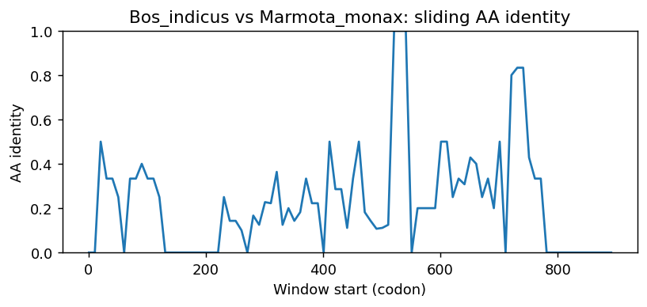
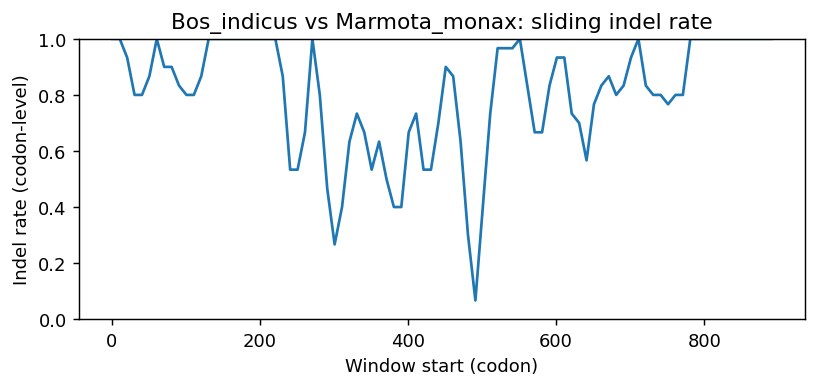
Bos_indicus vs Amblyraja_radiata
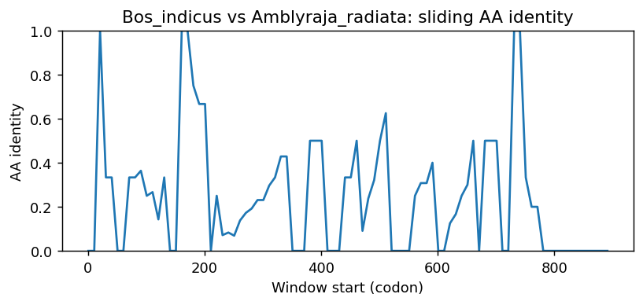
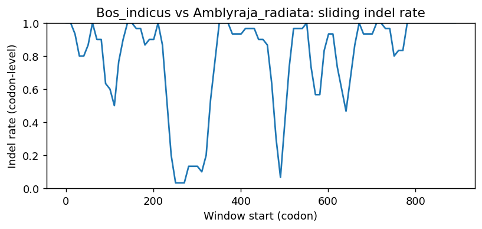
Bos_indicus vs Rana_temporaria
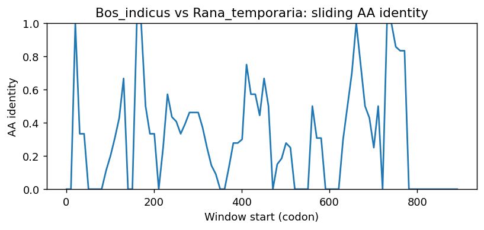
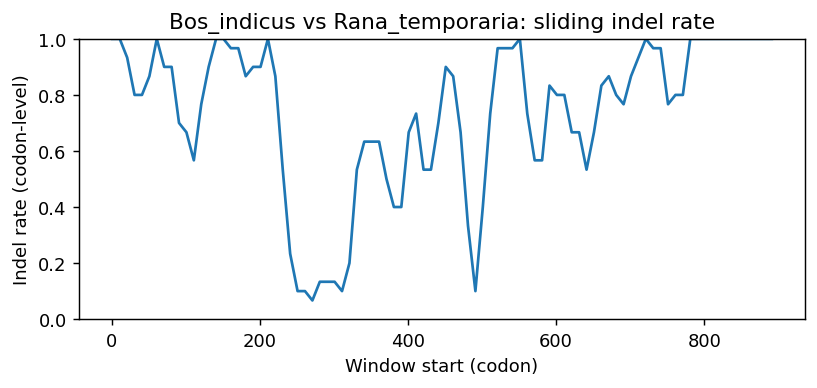
Bos_indicus vs Xenopus_tropicalis
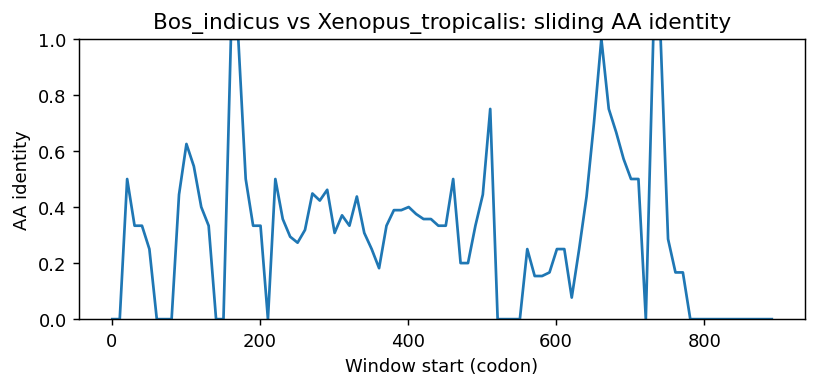
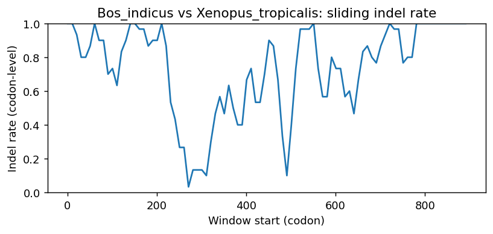
Bos_indicus vs Dendropsophus_ebraccatus
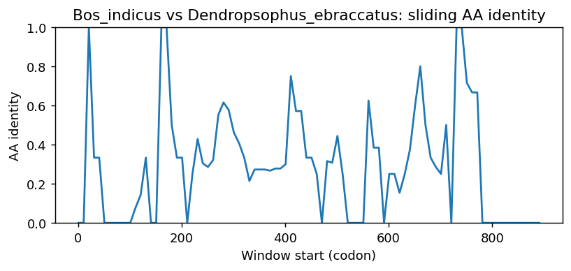

Bos_indicus vs Bufo_bufo
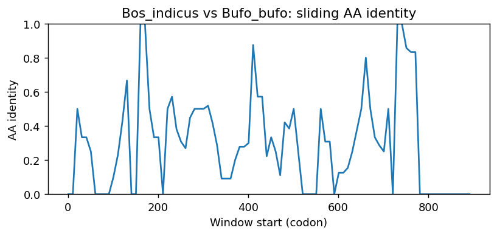
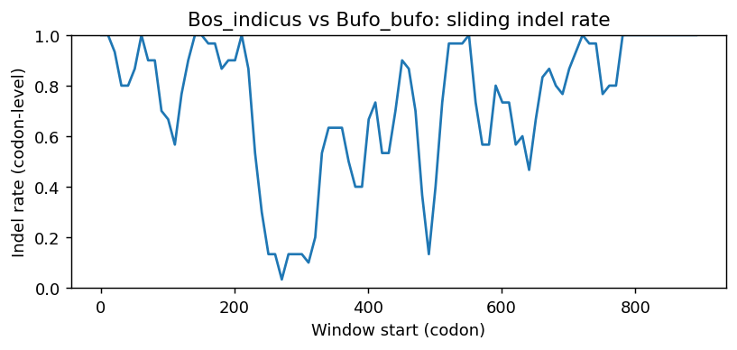
Methods (brief)
- CDS are translated (genetic code 1); proteins aligned by MAFFT when available, otherwise a progressive global aligner (BLOSUM62). Protein MSA is back-translated into a codon MSA.
- Pairwise metrics: AA/NT identities on aligned nongap positions; Ts/Tv; single-hit syn/nonsyn counts; gap events and largest contiguous gap cluster (codons); sliding-window AA identity and codon-level indel rate.
- Per-sequence diagnostics: GC content/skew, CpG density, AA low-complexity fraction via SEG-like entropy windows (win=12, H<2.2), and NT tandem repeats (homopolymers =5; di-nt =4 copies; tri-nt =3 copies).
- Correlations: Pearson/Spearman between AA identity and |GC difference|, mean AA LCR fraction, and mean NT repeat fraction across pairs.
- Risk classifier: combines identity, coverage, longest identical block, low-ID windows, max indel cluster, and up-ranks risk when mean LCR =0.25 or mean repeat =0.10 (soft-masking can remove seeds and reduce sensitivity).
Artifacts: pairwise_metrics.csv, per_sequence_composition.csv, correlations.csv, alignment_protein.faa, alignment_codon.fna.